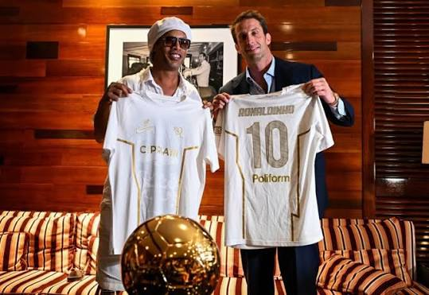
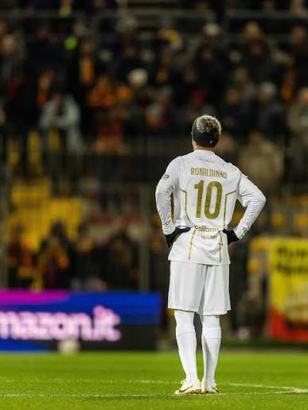
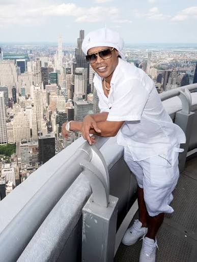

Ronaldinho retrouve les terrains en Serie C

Le 15 novembre 2026, Ronaldinho a retrouvé les terrains lors d’un match officiel avec le Ravenna FC, en troisième division italienne. Il n’avait plus joué en professionnel depuis plusieurs années. Pour son retour contre Forlì, Ronaldinho a joué la première mi-temps. Il a été chaleureusement accueilli par les supporters présents au stade. Après cette apparition, Ronaldinho n’a pas écarté l’idée de rejouer. La direction de Ravenne a également laissé entendre qu’une nouvelle participation pourrait être envisagée.
Son retour fait débat...

Le retour de Ronaldinho avec Ravenne a partagé les observateurs. Pour ses supporters, le revoir sur un terrain après plusieurs années est surtout un moment de fête et l’occasion de célébrer une légende. D’autres se demandent si cette apparition avait un véritable enjeu sportif, ou si elle servait surtout à attirer l’attention sur le club. Ronaldinho a joué une mi-temps contre Forlì, et la possibilité de le revoir jouer a aussi été évoquée.
Copropriétaire aux États-Unis

Copropriétaire aux États-Unis. En octobre 2024, via sa structure Grupo Ronaldinho, il entre au capital des clubs américains Greenville Triumph SC (USL League One, 3e division) et Greenville Liberty SC (équipe féminine) en Caroline du Sud.
Tournées de légendes et médias

Durant ces deux années, il multiplie les apparitions lors de matchs de gala (notamment les Clásicos de légendes avec le FC Barcelone), des opérations promotionnelles en vue de la Coupe du monde 2026 en Amérique du Nord, ainsi que dans des compétitions de football à 7 comme la Kings League.